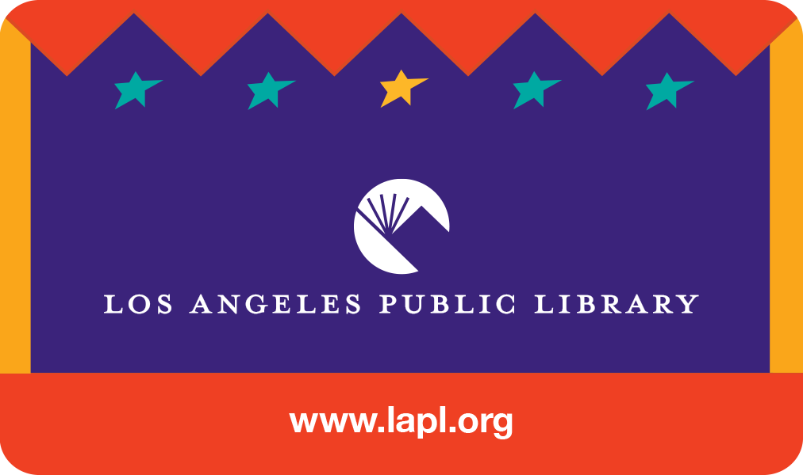

Public librarianship and special collections work are supported by a network of professional associations, conferences, publications, and job resources. This network helps new professionals enter the field and existing professionals stay current on issues pertaining to their specialization and/or region.
Associations such as the Society of California Archivists (SCA), the Society of American Archivists (SAA), and the Digital Library Forum (DLF) provide continued education through training and certifications. Conferences such as the American Library Association (ALA) conference, the Public Library Association (PLA) conference, and the California Library Association (CLA) conference provide spaces where fellow colleagues can connect and share resources. MLIS hopefuls, students, or graduates can look to job boards from ALA JobLIST, LAPL, CalCareers, and LA as Subject (archives focused) for a career entry point or for a better understanding of the professional offerings landscape.
Collectively, this network provides the infrastructure to facilitate, develop, and support a career in either public librarianship, special collections, or archives.
Conferences
Journals
Job Postings
